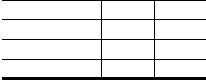
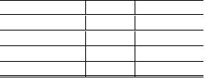

|


表
2:
事件提取算法针对三类事件的误报率和漏报率
事件类型
误报率
漏报率
公交车爆炸事件
14.28%
12.09%
暴恐事件
12.39%
14.05%
校园砍杀事件
14.10%
11.54%
表
3:
三类事件的误报率和漏报率
评估算法
评估算法
预测频次误差
常规算法
64.50
0.8956
Leave-one-out算法
82.34
0.5250
K-Fold算法
82.34
0.5234
滑动窗口
75.27
0.5525
5.2
预测算法评估
针对事件是否发生和发生次数两类预测值，分别
采用准确率和平均绝对误差评估。
正确率Accuracy
=
Nright=Ntotal
100%， 其
为预测正确的次数，
Ntotal表示预测总
中，
Nright
次数。
平均绝对误差AbsErr
=
∑
N
|npred
−
nobs|，其
中，npred表示预测发生的次数，nobs表示实际发生次
1
数。
我们使用了4种数据评估算法：
(1)常规算法通过前期历史数据预测最后三个月每
月各省时间是否发生以及发生次数。
(2)Leave-one-out算法
由于本文研究的是相邻时间段（即n和n
1)内事
件发生数与前期时间、空间、媒体因素以及当期时间、
空间因素的关联性，并不考虑预测期的绝对时间n的
影响，因此可采用Leave-one-out算法将其他数据均做为
训练数据，依次预测各省各时间段内的事件发生和数
量，结果取均值。
(3)K-Fold算法
类似于Leave-one-out算法，将数据分为K(=10)份，
每次将其中K
−
1份作为训练集，剩余的1份作为测试
数据，依次预测K次，整体循环N次，结果取均值。
(4)滑动窗口
类似与常规算法，由于本文所考察的关联性可能
随时间变化，因此仅采用预测期（3个月）的前一小段
时间即窗口期（6个月）进行训练，窗口不断滑动，依
次预测出结果，结果取均值。
本文预测系统可针对3类不同事件分别进行预测，
按照要求任选一类（校园砍杀事件）提供预测自评结
果如下。
四种评估方法差异较大，其中，常规算法预测准
确率较低的原因在于，相邻时间段的相关性可能随时
间变化，常规算法采用除预测期其余全部数据训练，但
仅预测了最后3个月，然而最后3个月规律可能和之前
差异较大，因此，预测准确率较低，Leave-one-out算法
和K-Fold算法预测采用了全部数据进行评估，因而能
够更加准确全面的反应出预测方法的效果。
6
结束语
本文首先针对原始数据的不足及进行了数据预处
理工作，包括数据的清洗、修正、融合。之后基于TF-
IDF结合余弦相似算法的事件提，并通过开放数据人工
标注的方法修正算法。创新点有如下几点：
(1)采用ckan开放数据平台，用众包的方式进行人
工标注事件。网页提交表单时需要输入验证码，如果
能把人工标注事件以验证码的方式众包，将会使这部
分资源有效利用，而开放数据平台为众包提供了基础，
使之成为可能。
(2)采用多源数据融合的方法进行数据分析。未来
我们会在数据可视化方面做进一步的工作。
参考文献
[1]
http://ckan.org/.
[2]
http://zh.wikipedia.org/wiki/TF-IDF.
[3]
Reshef, D. N.; Reshef, Y. A.; Finucane, H. K.; Gross-
man, S. R.; McVean, G.; Turnbaugh, P. J.; Lander, E.
S.; Mitzenmacher, M.; Sabeti, P. C. (2011). ”Detecting
Novel Associations in Large Data Sets”. Science 334
(6062): 1518–1524.
[4]
孔秋强,贺前华.
基于TFIDF与分类树的工程文本信息分类
法[J].计算机应用与软件.2014.
[5]
李巍,孙涛,陈建孝,罗梓恒,李雄飞.基于加权余弦相似度
的XML文档聚类研究[J].吉林大学学报.2010.
[6]
洪娜,钱庆,范炜,方安,王军辉.关联数据中关系发现的可视
化实践[J].现代图书情报技术.2013.
[7]
张宁.统计数据的可视化关联分析[J].统计与决策.2012.
|